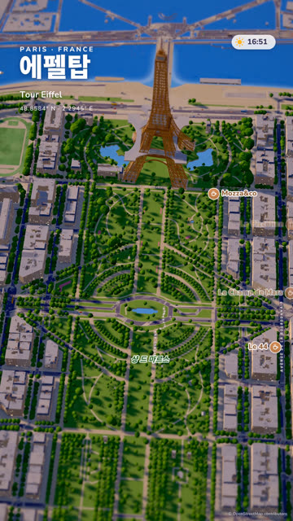
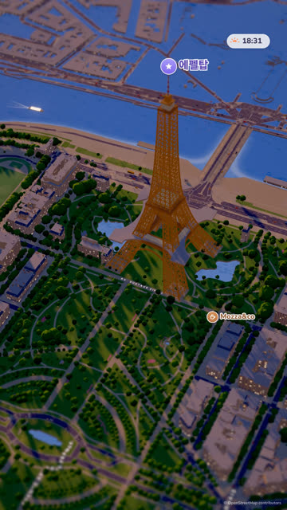
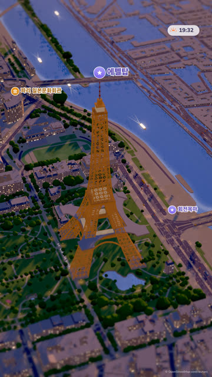
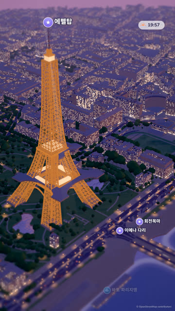
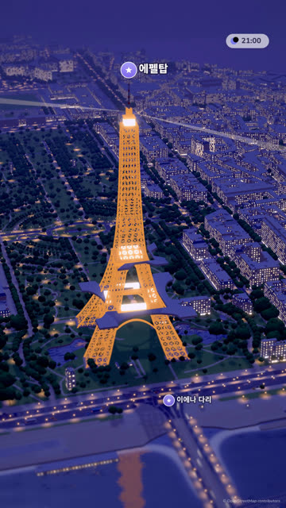
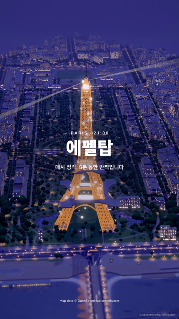

작업 흐름
- 입력
- 장소 하나(에펠탑, 비 오는 밤의 시부야 교차로, 빅벤, 경복궁 …)와 원하는 언어
- 데이터
- Nominatim으로 좌표를 찾고 OpenStreetMap에서 주변 2 km 안팎을 받아 미터 단위
place.json으로 변환. 건물 윤곽과 높이 · 층수 · 지붕, 도로 폭 · 차선 · 다리 · 이름(언어별), 강과 물(경계에서 잘린 강도 닫음), 공원, 나무, 가로등, 횡단보도, 벤치, 정류장, 장소(POI) - 브리프
- 꼭 보여 줄 한 순간, 한 줄 이야기, 카메라 키, 랜드마크의 실제 치수와 알아보게 하는 디테일, 그 도시의 색, 빛과 날씨, 핀 · 길 이름 · 제목 문구를 적은
BRIEF.md - 도시와 랜드마크
- 창문 격자 셰이더(밤에 켜짐) · 망사르드 · 박공 · 평지붕 · 지붕 상자 · 굴뚝의 건물, 칠한 바닥, 횡단보도 · 차선, 아치 다리, 돌 둑 아래로 꺼진 물과 반사, 수천 그루의 둥근 나무. 랜드마크는 키트(격자 기둥 · 아치 · 회전체 · 조명 · 서치라이트 · 전광판)로 직접 모델링
- 확인
- 12장 시트와 스틸을 8개 항목으로 채점, 로딩 · 글꼴 · 결정성 · 빈 화면 · 하얗게 날아감 · 핀 겹침 · 화면이 지도 밖으로 나감 · 카메라가 지붕 아래 · 랜드마크가 화면 안 검사
- 출력
- 30fps 1080×1920 MP4(로파이 그루브 · 핀 팝 · 카메라 휙 · 반짝임 합성 사운드), 반복 재생 라이브 페이지
node landmark-map-3d/scripts/new-film.mjs my-film --q "Big Ben, London" --size 1800x1800
node landmark-map-3d/scripts/place-map.mjs my-film/place.json
node landmark-map-3d/scripts/fonts.mjs my-film/film.html
node landmark-map-3d/scripts/check.mjs my-film/film.html
node landmark-map-3d/scripts/render.mjs my-film/film.html --sheet 12 --scale .4
node landmark-map-3d/scripts/score.mjs my-film/film.html --out my-film/out/score.wav
node landmark-map-3d/scripts/render.mjs my-film/film.html --audio my-film/out/score.wav요구 사항: Node 18+, Playwright Chromium, ffmpeg. 장소와 글꼴을 받을 때 한 번 네트워크가 필요하고 API 키 · GPU는 필요 없습니다(CPU WebGL에서 1080×1920 한 프레임 약 5–15초, 18초 예제를 워커 3개로 약 40분). 단계별 순서는 SKILL.md에 있습니다.
샘플
원본 게시물에 없는 장소인 에펠탑을 브리프부터 새로 설계해 만든 예제의 장면, 거리 높이에서 본 디테일, 같은 템플릿으로 다른 도시를 처음 띄워 본 모습입니다. 영상 장면 카드를 누르면 그 순간이 라이브 페이지에서 멈춘 채 열립니다.
「에펠탑」 18초 · 16:40 → 21:00
샹 드 마르스 위의 오후가 금빛, 푸른빛으로 바뀌고, 카메라가 센강으로 내려갔다가 트로카데로 쪽으로 올라서면 밤 9시 정각에 탑이 반짝입니다

2.5초 · 낮지도로 연 샹 드 마르스실제 길과 나무 위치, 데이터에서 고른 카페 핀, 제목과 시계

5.5초 · 금빛으로탑으로 다가감손으로 만든 탑이 실제 높이 330 m로 도시와 비례

8.4초 · 19:31동쪽으로 돌아 본 탑알파로 뚫은 X자 격자, 다리 사이 아치, 데크의 격자 띠

12초 · 황혼센강 위로 내려옴창문 조명, 가로등 빛 웅덩이, 강가의 바토와 다리

14.6초 · 21:00트로카데로 쪽 밤보랏빛 밤과 따뜻한 불빛, 돌아가는 서치라이트, 강물의 반사

17.2초 · 끝 화면정각의 반짝임탑 표면의 흰 점 900개가 깜빡이고, 끝 문구와 지도 데이터 출처
거리 높이의 디테일 같은 도시, 가까이
지도 위의 작은 것들이 가까이서도 무너지지 않는지 봅니다. 데이터에 있는 벤치 · 가로등 · 횡단보도가 제자리에 놓입니다
새 장소의 첫 모습 광화문 · 템플릿 그대로
new-film.mjs --q "Gwanghwamun, Seoul" 한 줄로 받은 서울 도심을 템플릿이 바로 띄운 모습입니다. 가운데 상자는 자리 표시자로, 실제 영상에서는 광화문을 직접 만들어 바꿉니다
링크
- SKILL.md 워크플로
- 폴더 lib · scripts · templates · examples
- README.md 빠른 시작
- references/BRIEF.md 장소 → 브리프, 스틸 검토 기준
- references/LOOK.md 원본에서 관찰한 화면 문법
- references/LANDMARKS.md 랜드마크 직접 만들기, 유형별 방법
- references/ENGINE.md 도시 · 생활 · 타임라인 · 글자 API와 페이지 계약
- references/LESSONS.md 겪은 문제와 해결